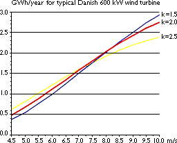

Income
from Wind Turbines
Energy
Output from a Wind Turbine
 If you have read the page on Annual
energy output from a wind turbine, this graph will already
be familiar to you.
If you have read the page on Annual
energy output from a wind turbine, this graph will already
be familiar to you.
 The graph shows how annual energy production
in million kilowatt hours varies with the windiness of the site.
With a mean wind speed of, say 6.75 metres per second at hub
height you get about 1.5 million kilowatt hours of energy per
year.
The graph shows how annual energy production
in million kilowatt hours varies with the windiness of the site.
With a mean wind speed of, say 6.75 metres per second at hub
height you get about 1.5 million kilowatt hours of energy per
year.
 As you can see, annual energy output varies
roughly with the cube of the wind speed at turbine hub height.
Just how sensitive energy production is to wind speed varies
with the probability distribution for the wind, as explained
in the page on the Weibull distribution.
In this graph we have three examples with different k-values
(shape factors). We will be working with the red curve (k=2)
in our example.
As you can see, annual energy output varies
roughly with the cube of the wind speed at turbine hub height.
Just how sensitive energy production is to wind speed varies
with the probability distribution for the wind, as explained
in the page on the Weibull distribution.
In this graph we have three examples with different k-values
(shape factors). We will be working with the red curve (k=2)
in our example.
The Availability
Factor
The figures for annual energy output assume that wind turbines
are operational and ready to run all the time. In practice, however,
wind turbines need servicing and inspection once every six months
to ensure that they remain safe. In addition, component failures
and accidents (such as lightning strikes) may disable wind turbines.
 Very extensive statistics show that the best
turbine manufacturers consistently achieve availability factors
above 98 per cent, i.e. the machines are ready to run more than
98 per cent of the time. Total energy output is generally affected
less than 2 per cent, since wind turbines are never serviced
during high winds.
Very extensive statistics show that the best
turbine manufacturers consistently achieve availability factors
above 98 per cent, i.e. the machines are ready to run more than
98 per cent of the time. Total energy output is generally affected
less than 2 per cent, since wind turbines are never serviced
during high winds.
 Such a high degree of reliability is remarkable,
compared to other types of machinery, including other electricity
generating technologies. The availability factor is therefore
usually ignored when doing economic calculations, since other
uncertainties (e.g. wind variability) are far larger.
Such a high degree of reliability is remarkable,
compared to other types of machinery, including other electricity
generating technologies. The availability factor is therefore
usually ignored when doing economic calculations, since other
uncertainties (e.g. wind variability) are far larger.
 Not all wind turbine manufacturers around
the world have a good, long reliability record, however, so it
is always a good idea to check the manufacturers' track record
and servicing ability before you go out and buy a new wind turbine.
Not all wind turbine manufacturers around
the world have a good, long reliability record, however, so it
is always a good idea to check the manufacturers' track record
and servicing ability before you go out and buy a new wind turbine.
© Copyright 2000 Soren Krohn. All rights reserved.
Updated 6 August 2000
http://www.windpower.org/tour/econ/income.htm